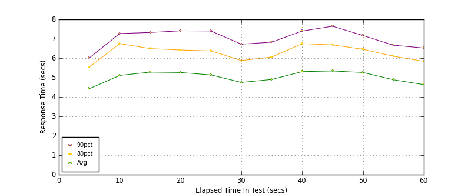
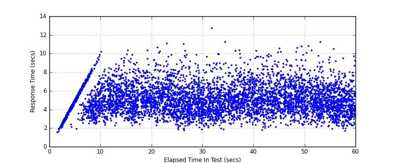
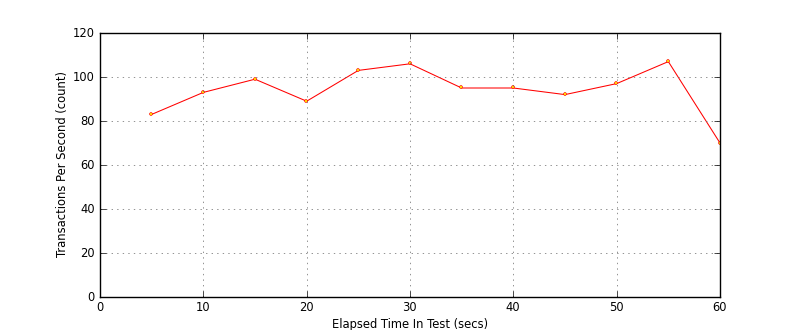

Performance Results Report
Summary
transactions: 6167
errors: 0
run time: 60 secs
rampup: 0 secs
test start: 2017-05-24 19:14:19
test finish: 2017-05-24 19:15:17
time-series interval: 5 secs
workload configuration:
| group name | threads | script name |
|---|
| user_group-21 | 20 | redis_stress.py |
| user_group-20 | 20 | redis_stress.py |
| user_group-23 | 20 | redis_stress.py |
| user_group-22 | 20 | redis_stress.py |
| user_group-25 | 20 | redis_stress.py |
| user_group-24 | 20 | redis_stress.py |
| user_group-2 | 20 | redis_stress.py |
| user_group-3 | 20 | redis_stress.py |
| user_group-1 | 20 | redis_stress.py |
| user_group-6 | 20 | redis_stress.py |
| user_group-7 | 20 | redis_stress.py |
| user_group-4 | 20 | redis_stress.py |
| user_group-5 | 20 | redis_stress.py |
| user_group-8 | 20 | redis_stress.py |
| user_group-9 | 20 | redis_stress.py |
| user_group-10 | 20 | redis_stress.py |
| user_group-11 | 20 | redis_stress.py |
| user_group-12 | 20 | redis_stress.py |
| user_group-13 | 20 | redis_stress.py |
| user_group-14 | 20 | redis_stress.py |
| user_group-15 | 20 | redis_stress.py |
| user_group-16 | 20 | redis_stress.py |
| user_group-17 | 20 | redis_stress.py |
| user_group-18 | 20 | redis_stress.py |
| user_group-19 | 20 | redis_stress.py |
All Transactions
Transaction Response Summary (secs)
| count | min | avg | 80pct | 90pct | 95pct | max | stdev |
|---|
| 6167 | 1.532 | 5.037 | 6.281 | 7.093 | 7.851 | 12.700 | 1.537 |
Interval Details (secs)
| interval | count | rate | min | avg | 80pct | 90pct | 95pct | max | stdev |
|---|
| 1 | 417 | 83.40 | 1.532 | 4.428 | 5.542 | 6.010 | 6.191 | 6.507 | 1.174 |
| 2 | 466 | 93.20 | 2.314 | 5.111 | 6.750 | 7.272 | 7.876 | 10.139 | 1.636 |
| 3 | 497 | 99.40 | 2.255 | 5.282 | 6.495 | 7.325 | 7.980 | 10.307 | 1.475 |
| 4 | 449 | 89.80 | 2.234 | 5.263 | 6.423 | 7.411 | 8.090 | 10.617 | 1.505 |
| 5 | 517 | 103.40 | 1.706 | 5.137 | 6.376 | 7.403 | 8.058 | 11.039 | 1.615 |
| 6 | 531 | 106.20 | 1.833 | 4.752 | 5.879 | 6.722 | 7.546 | 10.267 | 1.494 |
| 7 | 479 | 95.80 | 1.836 | 4.905 | 6.060 | 6.827 | 7.876 | 12.700 | 1.531 |
| 8 | 475 | 95.00 | 2.133 | 5.308 | 6.751 | 7.401 | 7.927 | 10.322 | 1.536 |
| 9 | 460 | 92.00 | 1.796 | 5.343 | 6.685 | 7.646 | 8.525 | 10.506 | 1.613 |
| 10 | 486 | 97.20 | 2.273 | 5.263 | 6.459 | 7.168 | 7.979 | 10.804 | 1.567 |
| 11 | 537 | 107.40 | 1.856 | 4.889 | 6.100 | 6.668 | 7.387 | 11.202 | 1.471 |
| 12 | 353 | 70.60 | 1.650 | 4.637 | 5.838 | 6.524 | 7.336 | 9.700 | 1.437 |
Graphs
Response Time: 5 sec time-series

Response Time: raw data (all points)

Throughput: 5 sec time-series
